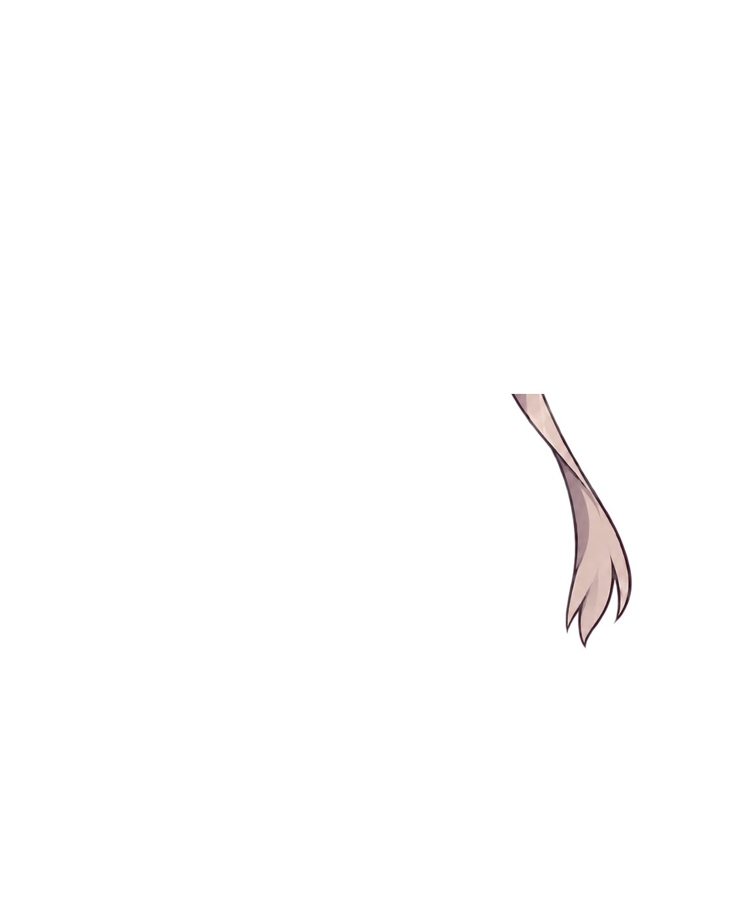
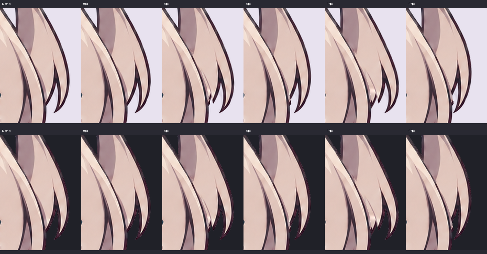

母版与马尾隐藏结构复核
制作中：本页检查独立马尾的遮挡补全、边缘与摆动。其余衣身、手臂、坐姿和全身动作尚未完成；原表情文件保持冻结。这里没有安装或替换现用形象。
锁定母版 · 边缘恢复源
分层合成 · Coopanion 官方渲染器
加载素材…
完整人物上下文中的生成源（仅提取隐藏头发，不采用其中的脸和衣服）


离线原位、普通摆幅与压力帧对照

制作中：本页检查独立马尾的遮挡补全、边缘与摆动。其余衣身、手臂、坐姿和全身动作尚未完成；原表情文件保持冻结。这里没有安装或替换现用形象。
锁定母版 · 边缘恢复源
分层合成 · Coopanion 官方渲染器
加载素材…

